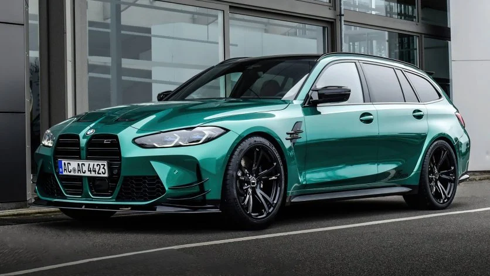

Modele BMW
BMW Seria 3
BMW Seria 3 to kwintesencja sportowej elegancji w segmencie sedanów średniej wielkości. Znana ze swojej dynamiki i innowacyjnych technologii, Seria 3 jest idealnym wyborem dla tych, którzy cenią sobie połączenie komfortu i wydajności.
BMW M5 Competition
BMW M5 Competition to więcej niż sportowy sedan. To maszyna łącząca niesamowitą moc z luksusem i zaawansowaną technologią. M5 Competition to esencja mocy, oferująca niezapomniane wrażenia z jazdy.
BMW M3 Touring
BMW M3 Touring to połączenie sportowego charakteru z praktycznością. Ten model to idealny wybór dla osób szukających emocji płynących z dynamicznej jazdy, nie rezygnując przy tym z przestrzeni i komfortu.
BMW X6 Competition
BMW X6 Competition to SUV, który wyróżnia się nie tylko swoją masywną sylwetką, ale także imponującymi osiągami. To połączenie elegancji, mocy i zaawansowanej technologii, idealne dla tych, którzy chcą zwracać uwagę na drodze.
BMW E36
BMW E36 to klasyk wśród SUV-ów marki BMW. Ten model łączy w sobie elegancję i wszechstronność, oferując komfortową jazdę zarówno w miejskich warunkach, jak i na trudniejszym terenie.